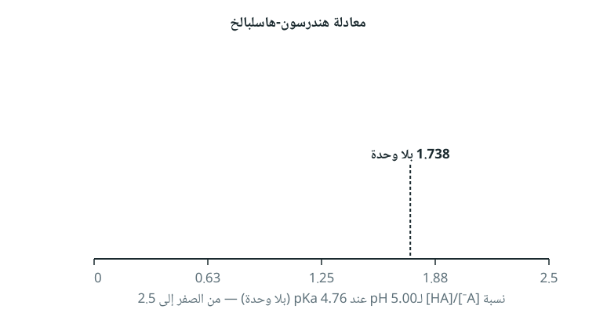

معادلة هندرسون-هاسلبالخ
Henderson–Hasselbalch equation
معادلة هندرسون-هاسلبالخ تربط حموضة محلول منظم بنسبة القاعدة المرافقة إلى الحمض: pH = pKa + log([A⁻]/[HA]). تُستعمل لتصميم المحاليل المنظمة وحساب pH عند نسب خلط معروفة، وتُبيّن أن المنظم يعمل أفضل ما يعمل قرب pKa.
المعادلة تُشتق من ثابت تفكك الحمض Ka = [H⁺][A⁻]/[HA] بأخذ اللوغاريتم السالب للطرفين: pH = pKa + log₁₀([A⁻]/[HA]). ومعناها العملي أن pH المحلول المنظم يتحدد بنسبة الأنيون إلى الحمض غير المفكك، لا بتركيزهما المطلق. فإذا تساوت النسبتان كان pH = pKa، وهي أفضل نقطة تنظيم لأن المشتق d(pH)/d(نسبة) أصغر ما يكون. مثال: محلول حمض أسيتيك pKa = 4.76 مع أسيتات الصوديوم بنسبة [A⁻]/[HA] = 10^(5.00−4.76) = 1.738 يعطي pH = 5.00.
كيف تعمل الظاهرة؟
المحلول المنظم يقاوم تغيّر pH لأن فيه كمية كبيرة من زوج حمض-قاعدة مرافقة. وعند إضافة حمض قوي، تستهلكه القاعدة المرافقة A⁻ فتحوّله إلى HA؛ وعند إضافة قاعدة قوية، يستهلكها HA فتحوّلها إلى A⁻. وفي الحالتين تتغير النسبة [A⁻]/[HA] تغيراً صغيراً، ولأن pH يعتمد على لوغاريتم النسبة لا على قيمتها المطلقة، يكون أثر التغيّر على pH ضئيلاً. وهذا هو سبب عمل المنظم في نطاق ضيق حول pKa: بعيداً عنه تكون إحدى النسبتين صغيرة جداً فتنفد سريعاً.
العلاقة بالأرقام
pH = pKa + log₁₀([A⁻]/[HA]). وسعة التنظيم القصوى عند نسبة 1:1 حيث pH = pKa. ومقاومة التغيّر تُقاس بالسعة β = 2.303·([HA]·[A⁻])/([HA]+[A⁻])، وقيمتها العظمى عند تساوي التركيزين وتساوي 0.576·C_total. مثال: C_total = 0.100 mol/L عند pKa يعطي β = 0.576 × 0.100 = 0.0576 mol/L لكل وحدة pH. أي أن إضافة 0.0576 mol من حمض قوي لكل لتر تغيّر pH بمقدار 1 فقط.
مفاهيم متقاربة
يُفرَّق بين هندرسون-هاسلبالخ ومعادلة توازن الماء: الأولى تصف منظماً حمضياً ضعيفاً، والثانية تصف الماء النقي. ويُفرَّق بين pKa وpKb: مجموعهما 14 عند 25 °C للمزدوج المترافق. ويُفرَّق بين التركيز والنشاط: المعادلة بالتركيزات تقريب، وبالأنشطة تصبح دقيقة، والفرق يظهر عند القوة الأيونية العالية. وأخيراً يُفرَّق بين المنظم والحمض نفسه: الحمض الضعيف وحده ليس منظماً إلا إذا وُجدت قاعدته المرافقة بكمية مماثلة.
حدود التطبيق
المعادلة تفشل للحمض القوي أو القاعدة القوية حيث لا يوجد زوج مترافق بكمية كافية. وتنحرف عند القوة الأيونية العالية لأن الأنشطة تختلف عن التركيزات اختلافاً كبيراً. ولا تصف المحاليل التي يذوب فيها غاز — كمنظومة كربونات وبيكربونات المفتوحة على الهواء — حيث يتحدد pH بالضغط الجزئي لثاني أكسيد الكربون لا بنسبة الخلط. كذلك لا تُستعمل خارج نطاق pKa±1 لأن السعة تنهار، ولا في المذيبات غير المائية حيث يتغير مقياس pH نفسه.

| الكمية | القيمة | المصدر |
|---|---|---|
| نسبة [A⁻]/[HA] لـpH 5.00 عند pKa 4.76 | 1.738 بلا وحدة | [1] |
| تركيز الحمض غير المفكك | 0.0365 mol·L⁻¹ | [1] |
المصادر
- 1 The International System of Units (SI), 9th edition (2019) — BIPM — Bureau International des Poids et Mesures (2019). www.bipm.org/en/publications/si-brochure · اطُّلع عليه 2026-11-21
- 2 CODATA Value: Avogadro constant — NIST — CODATA 2022 recommended values (2024). physics.nist.gov/cgi-bin/cuu/Value?na · اطُّلع عليه 2026-11-21
- 3 The International System of Units (SI), 9th edition (2019) — BIPM — Bureau International des Poids et Mesures (2019). www.bipm.org/en/publications/si-brochure · اطُّلع عليه 2026-11-21
استشهد بهذا المصطلح
الصيغتان مبنيتان من بيانات الصفحة نفسها: العنوان والتاريخ ورابط النسخة المنشورة.
معادلة هندرسون-هاسلبالخ — Henderson–Hasselbalch equation. (2026). ديوان المعرفة — انفراد. https://infiradev.com/diwan/terms/term-henderson-hasselbalch.html
@misc{term-henderson-hasselbalch2026,
title = {معادلة هندرسون-هاسلبالخ},
titleaddon = {Henderson–Hasselbalch equation},
howpublished = {{ديوان المعرفة — انفراد} — مرجع علمي عربي},
year = {2026},
url = {https://infiradev.com/diwan/terms/term-henderson-hasselbalch.html},
urldate = {2026-11-26},
note = {مراجعة علمية: hermes (مراجعة معتمدة 2026-11-26)}
}
راجعه: hermes (مراجعة معتمدة 2026-11-26) · 2026-11-26 · آخر تحديث 2026-11-21